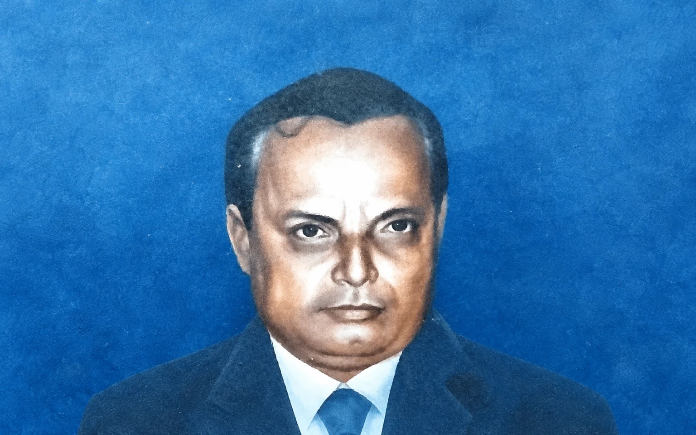

Missing Memories
Servant of the People

I have seen during my life how the bureaucracy has degenerated into a self- serving group over the years and the way it behaves as the master of the people instead of its servant. But there are still few exceptions in the system. I have publicly praised them and saluted them from my core. A country like India needs more and more such persons in public service who can work in a committed manner for the public interest and certainly not for any politician or personal interest.
The fundamental principle that makes it deliver is its accessibility to the common people. I believe that anyone in an insulated atmosphere can not deliver the public good. One has to go out and know the pulse of the people to serve them better. Therefore, one has to shun the arrogance of power and serve the people with empathy and human approach.
It was my fortune that I came across such a benevolent soul in the form of my father in law late Jatindra Nath Khuntia belonging to the state civil service. When he came into my life in mid eighties at the beginning of my career he was almost at the fag end of his illustrious years in public service. Being inducted into the cadre as a Sub-Deputy his promotional prospect was bleak and he rose to become by then the Sub-Collector, Nayagarh. Now it’s a District. He had then hardly two years left for his superannuation and was due for his next promotion. But he passed away owing to a massive heart attack which got him bed ridden for a week before succumbing to it.
I observed him from close quarters and got baffled by his simplicity, proactive approach, serving attitude, knowledge and understanding and decisiveness. His office and residence were open for the people round the clock. While commuting to and from office or on tour anyone can approach him on the way and he instantly used to solve the problem.
For many of his colleagues he was a friend, philosopher and guide. His domain knowledge in revenue laws and service rules and even financial rules was exceptional and people used to take his advice very often. In the early part of his life he was a youth leader in his native place in Cuttack and came in close contact with leaders like Harekrushna Mahatab. Therefore, he was at ease in dealing with the political leaders across party lines and was appreciated by all and sundry.
Then the local MP and the local Minister were at loggerheads but he maintained a cordial relationship with both of them. His advice was being taken very seriously by the political leadership and most of the problems were getting sorted out easily with his intervention. Nobody harbored any reservations about his sincerity and efficiency.
The Collector of Puri District had given him a free hand and never poked his nose in his affairs. His trust in him was full and unconditional. Previously he had served for about twenty five years in Puri in different capacities and was very popular there as an able administrator and a good human being. I have seen people worshiping his photo like a living God to whom he provided government jobs and got settled in life.
This is my belief that a truly good person at heart can be a good administrator. In his personal front he was extremely sociable, caring and affectionate not only for his near and dear ones but to all around him. On the other hand although he had passed through most difficult times of his life at times almost in penury he never succumbed to any allurement .
At one point of time I was told he had one set of under garments and on rainy days he used to face the ordeal of drying it near the chimney. He had no air of superiority and he viewed all as human beings irrespective of social status. He used to carry the child of his driver while viewing Ramayan serial on television. He always made it a point to attend the social functions of his subordinates even if he belonged to the lowest rung of the hierarchy.
When he was Sub Collector, Nayagarh whenever any BDO or Tahasildar visited him he would invariably take lunch with him. It was standing practice. On the reverse, when he went on tour to any block or Tehsil he used to take lunch in their residence instead of the IB there. Everyone had Gudakhu for him with which he used to brush his teeth before taking lunch. Again their children were supposed to be present in the house and he doubled as grandpa for those children. He was a father figure for the younger generation of officers and they respected him a lot. Some of my friends who worked under him had high esteem for him. His skill in handling interpersonal relationships was unique. He endeared all and antagonized none.
I have yet to come across such a wonderful person like him in my life. He was truly a servant of the people.
Leave a thought
Likes and comments will open soon.